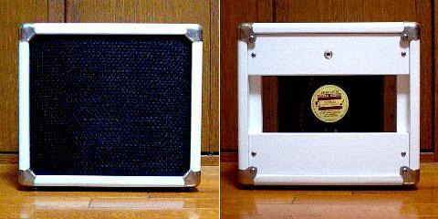

ギター用スピーカーキャビネット（8Ω 25W）
2009年09月23日 カテゴリー：ギターアンプ・ベースアンプ

本当はアンプカテゴリではないのですが、アンプを作る前にギター用スピーカーキャビネットを作ってみました。いちいちコンボアンプを作るとコストがかかるので。
とりあえず家用の小さめのものがよいということで、値段と大きさ、出力を考えるとJensenのC-8R（\5千、8インチ、25W）が一番でしょう。まぁ25Wも出す環境はないですが…一般オーディオ用のスピーカーも考えたのですが、やはりギターらしい音にはならないみたいです。
スピーカーが決まると大体の大きさが決まります。いろいろ調べてみると木材は3/4インチ（=18mm）パイン単板というのが定番みたいです。単板なんてのは普通のホームセンターにはないし、あっても高いでしょうから、集成材にします。まぁキャビネットは木材が音にあまり影響しないらしいので何でもよいでしょう。ホームセンターにあった18mm×300mm×1820mmのパイン集成材にしました。大体のホームセンターでは木材カットのサービスがあるみたいです。まっすぐに正確に切ってくれるので是非利用したいところです。
横幅336mm、高さ300mm、奥行きは200mmになっています。一応トーレックス、スピーカーグリルの厚さを考えてバッフル板は小さめにしたつもりですが、バッフル板を押し込むときキツキツすぎてスピーカーグリルの網がたるんでいます。他のサイトではバッフル板は合板とかでもっと薄かったりしますが、特に何も考えずに同じ材にしました。スピーカーの大きな丸い穴をあけるのが大変です。私は小さい穴をたくさん空けてそれをつなぎ合わせました（昔ミニ四駆で肉抜きしてたのを思い出します）。板と板の接着はネジと木工用ボンドです。組み立て方次第ではネジはなくても大丈夫かもしれません。このネジがコーナーガード（角に付ける金具）を留めるネジと干渉してしまい、強引にねじ込むハメになりました。ネジを付ける部分はちゃんと考えないといけません。
白のトーレックスは日乃出エンジニアリングという店で見つけたんですが、現在（2009年4月29日の時点では）販売を休止してるそうで、普通の合皮を布百選というサイトで買いました。トーレックスの貼り方はかなり適当です（角の部分はどうせコーナーガードで隠れるので）。接着剤は木工用ボンドを使っています。
前面のコーナーガードは強引にペンチで折り曲げました。きちんと角に合わせて折り曲げてあるコーナーガードも日乃出エンジニアリングにあったのですが…
さて、これからぼちぼちアンプ（ヘッド）をいろいろ作っていこうかと思います。